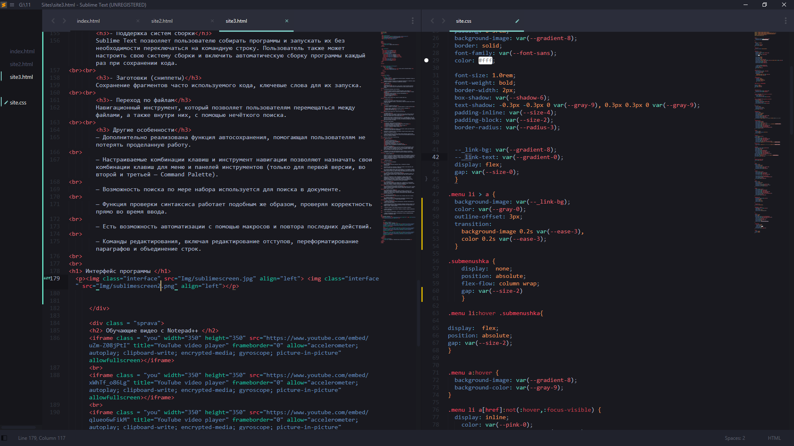
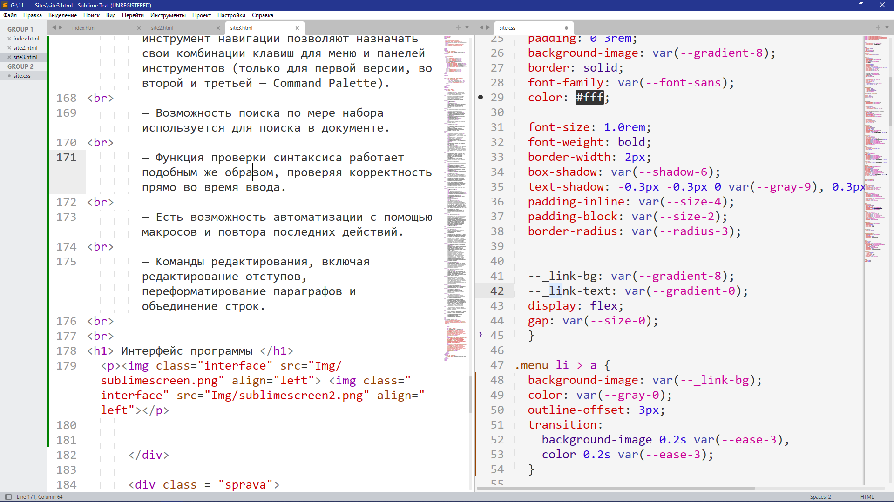

Sublime Text
— проприетарный текстовый редактор. Поддерживает плагины на языке программирования Python.Разработчик позволяет бесплатно и без ограничений ознакомиться с продуктом, однако программа уведомляет о необходимости приобретения лицензии.
|История|
Sublime Text
Проект начался в ноябре 2007 года с целью создать «лучший текстовый редактор», первая версия программы вышла 18 января 2008 года и была доступна только под Windows.Из возможностей программы стоит отметить:
Последняя версия Sublime Text 1 вышла 13 сентября 2010 года.
Sublime Text 2
Со второй версии редактор стал доступен под OS X и Linux. Публичное тестирование началось с альфа-версии,а первая бета-версия была выпущена 1 июля 2011 года.Нововведения:
Последняя версия Sublime Text 2 вышла 26 июня 2012 года.
Sublime Text 3
Бета-версия Sublime Text 3 вышла 29 января 2013 года и была доступна только для зарегистрированных пользователей, которые купили Sublime Text 2. Однако после релиза 3047, Sublime Text 3 стал доступен всем.Финальная версия вышла 13 сентября 2017 года, 3.1 — 7 мая 2018 года, а 3.2 — 13 марта 2019 года. Однако dev-версия доступна только зарегистрированным участникам. Также для загрузки стали доступны deb-пакеты для GNU/Linux-дистрибутивов. Ранее же были доступны только tar-архивы.
Изменения в новой версии:
Sublime Text 4
В апреле 2020 года разработчик объявил в чате Discord о работе над Sublime Text 4 и опубликовал альфа-версию для тестирования.Пользователи, получившие доступ к этой версии, отмечают высокую скорость работы программы и плавность скроллинга.
В этой версии планируется изменение способа продажи редактора: лицензия будет позволять обновлять программу три года, после чего для использования новых версий нужно будет продлевать подписку.
Финальная версия вышла 21 мая 2021 года.
|Возможности|
- Некоторые возможности:
- Поддержка языков
Sublime Text поддерживает большое количество языков программирования[8] и имеет возможность подсветки синтаксиса для C, C++, C#, CSS, D, Dylan, Erlang, HTML, Groovy, Haskell, Java, JavaScript, LaTeX, Lisp, Lua, Markdown, MATLAB, OCaml, Perl, PHP, Python, R, Ruby, Rust, SQL, TCL и XML.В дополнение к тем языкам программирования, которые включены по умолчанию, пользователи имеют возможность загружать плагины для поддержки других языков.
- Менеджер пакетов
Sublime Text может быть оснащён менеджером пакетов, который позволяет пользователю находить, устанавливать, обновлять и удалять пакеты без перезагрузки программы. Менеджер поддерживает установленные пакеты в актуальном состоянии, загружая новые версии из репозиториев. Кроме того, он предоставляет команды для активации и деактивации установленных пакетов.|Особенности|
Некоторые особенности программы:
- Интерфейс
Редактор содержит различные визуальные темы, с возможностью загрузки дополнительных.Пользователи видят весь свой код в правой части экрана в виде мини-карты, при клике на которую можно осуществлять навигацию.
Есть несколько режимов экрана. Один из них включает от 1 до 4 панелей, с помощью которых можно показывать до четырёх файлов одновременно. Полноценный (free modes) режим показывает только один файл без каких-либо дополнительных меню вокруг него.
- Выделение столбцов и множественная правка
Выделение столбцов целиком или расстановка нескольких указателей по тексту, что делает возможным мгновенную правку. Указатели ведут себя, будто каждый из них — один в тексте.Команды типа перемещение на знак, перемещение на строку, выборка текста, перемещение на слово или его части (CamelCase, разделённый дефисом или подчёркиванием), перемещение в начало/конец строки и т. д., влияют на все указатели независимо и сразу, позволяя править сложноструктурированный текст быстро, без использования макрокоманд или регулярных выражений.
- Автодополнение
Когда пользователь набирает код, Sublime Text, в зависимости от используемого языка, будет предлагать различные варианты для завершения записи. Редактор также автоматически завершает созданные пользователем переменные.- Подсветка синтаксиса и высокая контрастность
Тёмный фон Sublime Text предназначен для увеличения контрастности текста. Основные элементы синтаксиса выделены разными цветами, которые лучше сочетаются с тёмным фоном, нежели со светлым.- Поддержка систем сборки
Sublime Text позволяет пользователю собирать программы и запускать их без необходимости переключаться на командную строку. Пользователь также может настроить свою систему сборки и включить автоматическую сборку программы каждый раз при сохранении кода.- Заготовки (сниппеты)
Сохранение фрагментов часто используемого кода, ключевые слова для их запуска.- Переход по файлам
Навигационный инструмент, который позволяет пользователям перемещаться между файлами, а также внутри них, с помощью нечёткого поиска.Другие особенности
— Дополнительно реализована функция автосохранения, помогающая пользователям не потерять проделанную работу.— Настраиваемые комбинации клавиш и инструмент навигации позволяют назначать свои комбинации клавиш для меню и панелей инструментов (только для первой версии, во второй и третьей — Command Palette).
— Возможность поиска по мере набора используется для поиска в документе.
— Функция проверки синтаксиса работает подобным же образом, проверяя корректность прямо во время ввода.
— Есть возможность автоматизации с помощью макросов и повтора последних действий.
— Команды редактирования, включая редактирование отступов, переформатирование параграфов и объединение строк.
Интерфейс программы
 